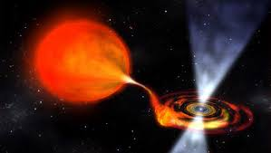

|

Pulsarlar ve Kuasarlar
Pulsarlar ve kuasarlar, evrende gözlemlenen en enerjik ve ilgi çekici gök cisimlerindendir. Her ikisi de inanılmaz derecede güçlü enerji kaynaklarıdır;
ancak kökenleri ve yapıları birbirinden tamamen farklıdır.
Pulsarlar, aslında nötron yıldızlarının özel bir türüdür. Bir yıldız süpernova patlamasıyla çöktükten sonra nötron yıldızına dönüşür ve eğer bu yıldız
çok hızlı dönüyorsa, kutuplarından güçlü radyo dalgaları yayar. Yıldız döndükçe bu ışınlar belirli aralıklarla Dünya’ya yönelir; tıpkı bir deniz fenerinin
ışığı gibi. Bu nedenle “pulsar” adı verilmiştir (İngilizce pulsating star — yani “atar yıldız”). Pulsarlar, olağanüstü hassas zamanlama özellikleriyle
bilinir; bazıları saniyede yüzlerce kez döner ve bu düzenlilik sayesinde evrende kozmik saatler gibi çalışırlar.
Kuasarlar ise çok daha devasa ve uzak yapılar olan aktif galaksi çekirdekleridir. Bir kuasarın merkezinde süper kütleli bir kara delik bulunur.
Kara deliğe düşen madde, olağanüstü hızlarla dönerken muazzam miktarda enerji açığa çıkarır. Bu enerji, tüm galaksiden bile daha parlak bir ışık
yayabilir. Kuasarlar, evrenin erken dönemlerinde çok sayıda görülmüştür ve milyarlarca ışık yılı uzakta olsalar bile hâlâ gözlemlenebilirler.
Özetle, pulsarlar yıldız ölümü sonrası oluşan kompakt nötron yıldızlarıyken, kuasarlar dev galaksilerin kalbindeki kara deliklerin beslenme
süreçlerinden kaynaklanan enerji patlamalarıdır. Pulsarlar zamanın ritmini ölçebileceğimiz kozmik metronomlar gibidir; kuasarlar ise evrenin en uzak
köşelerinde parlayan dev fenerlerdir. Her ikisi de evrenin enerjik doğasının ve kozmik güçlerin ne kadar uç boyutlara ulaşabileceğinin kanıtıdır.
|